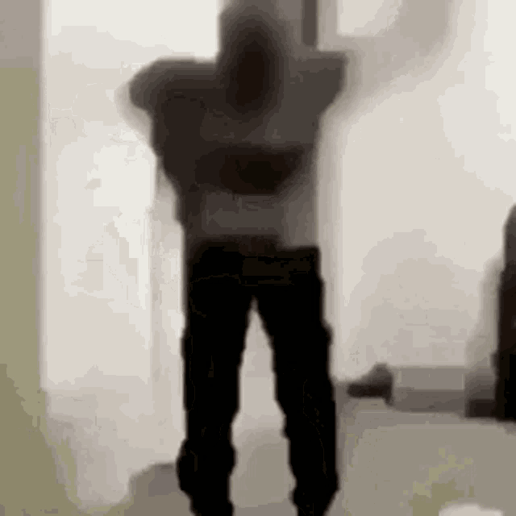

<html> <head> <title>Przyk³ad nr tutaj wpisz odpowiedni nume </title> <script language="JavaScript"> function WinOpen_zaj() { window.open("obraz.html","okienko","toolbar=no,directories=no,menubar=no,height=600,width=1100,top=200,left=200"); } </script> </head> <body> <form> <input type="button" name="przycisk" value="Nowa Strona" onclick="WinOpen_zaj(' ')"> </form> </body> </html> <html> <head> <script type="text/javascript"> function okno_zamknij_zaj() { window.close() } </script> </head> <body> <textarea rows="30" cols= "130"> powstala 1995 jest jêzykiem skryptowym bo Nie musi zostaæ skompilowany do kodu maszynowego, aby mo¿na by³o zobaczyæ efekty dzia³ania Wystarczy przegl¹darka internetowa, która ten jêzyk obs³uguje, klient na komputerze, Ze wzglêdów bezpieczeñstwa JavaScript ma znacznie ograniczone uprawnienia dostêpu do zasobów komputera jêzyk obiektowy <input type="button" name="przycisk" value="Nowa Strona" onclick="WinOpen(' ')"> input type button = przycisk, name=nazwa, value= wyswietlana nazwa, onclick= robi to kiedy klikniete window.open("obraz.html","okienko","toolbar=no,directories=no,menubar=no,height=280,width=160,top=200,left=200"); toolbar no= nie bedzie paseczka na górze, menubar no = tez paseczek nie, directories no adres nie, height=wysokosc, width=szerokosc, top=ile od góry, left=ile od lewej </textare>  <input type="button" value="zamknij okno" onclick="okno_zamknij_zaj()"/> </body> </html>